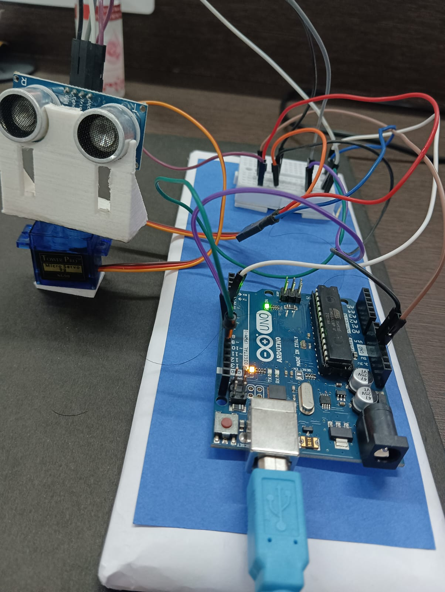

Developed an Ultrasonic Sound Radar using Arduino Uno and an HC-SR04 ultrasonic sensor to detect and visualize nearby objects. The system continuously measures the distance of surrounding objects using ultrasonic waves and displays their position in a radar-like interface. A servo motor rotates the sensor through different angles, enabling object detection over a wider area. This project provided hands-on experience in sensor interfacing, distance measurement, serial communication, Arduino programming and real-time visualization techniques.